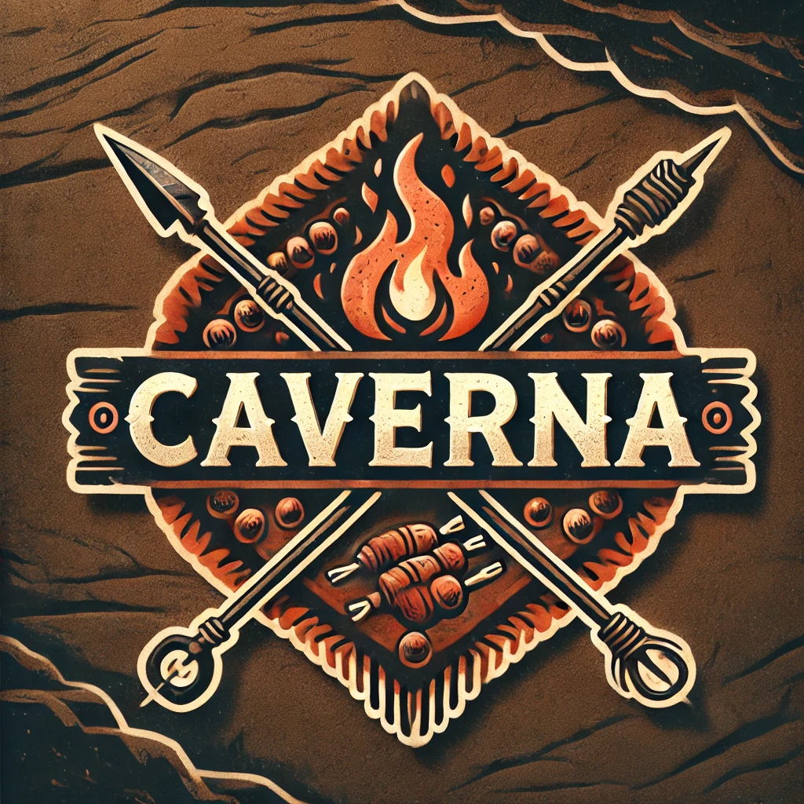

Overview
This is a digital menu website, dynamic and responsive, that adheres to development standards. This content presents the plan for a basic website plan in HTML. This will be a single document and the required content is outlined on the README of the karinafelippe/wdd131 repository on GitHub.
Content
Site Name
Caverna Espetos is the name that represents a foodtruck and restaurant brand name that is focused on barbecue skewers. It represents the owners personality and intended restaurant atmosphere.
Logo idea
A rustic and striking design, inspired by caves and fire, evoking a primitive and cozy atmosphere, ideal for a barbecue skewer food truck.
Site Purpose
It is becoming common, in Brazil, to see a QR Code access for the menu on the table of the restaurant instead of receiving a printed one. because of this, my subject will be a digital menu for a restaurant. The website will show the categories for this restaurant's menu, information about the food (name, photo, description, price), contacts (phone, social media, etc), information and address of the restaurant, online updates about the status (open or close), etc. The navigation menu will be placed in the head and I intend to change the list focus when the user scrolls down the page.
Scenarios
- Where is the foodtruck placed?
- What time the service is available?
- What are the drink option?
Color Schema
Palette URL: https://coolors.co/000000-bfc0c0-f86624-523c2a-7a5436
- Rich Black
- Cafe Noir
- Coffee
- Silver Sand
- Orange Red
Regular text color, borders, and content background.
Header and Footer background color, borders and content background.
Content background.
Color constrast, accents, and content background.
Text outline, borders, and content background.
Typograph
Examples of the fonts to be used and where they are to be applied.
- Heading 1
- Heading 2
- Normal body text/paragraph
Rye, serif, style normal, weight 400, size 2em.
Goudy Bookletter 1911, serif, style normal, weight 400, size 2em.
Segoe UI, Tahoma, Geneva, Verdana, sans-serif.
Wireframe
Home Page wireframe for larger view:
Home Page wireframe for mobile view: